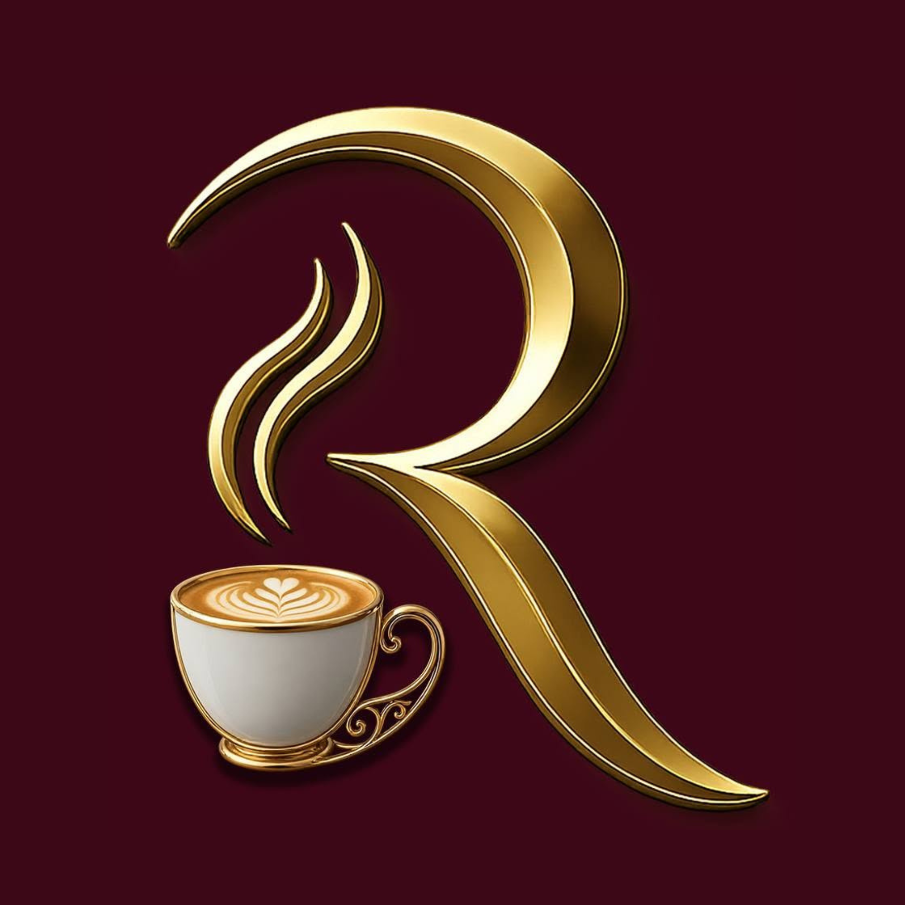

RAWANDمقاعد مصممة طبياً وفراغات مخصصة تضمن لك الراحة التامة خلال ساعات الدراسة الطويلة.
ركن مشروبات متكامل يقدم أجود أنواع القهوة المختصة لتجديد نشاطك وتركيزك.
شبكة إنترنت هوائية فائقة السرعة تتيح لك تصفح المحاضرات وتحميل الأبحاث بدون أي انقطاع.
نحن في Rawand Study House نؤمن أن البيئة المحيطة هي أساس الإبداع والتفوق الدراسي. لذلك وفرنا مساحة متكاملة تجمع بين الهدوء المطلق، والخدمات الراقية، والأجواء المحفزة التي تساعد الطلاب والباحثين على عيش تجربة إنتاجية لا مثيل لها.
لا يتطلب حجز مسبق للزيارات اليومية، يمكنك القدوم في أي وقت واختيار مقعدك المفضل. الحجز المسبق يفضل فقط للغرف الجماعية أو الاجتماعات لضمان توفرها.
نوفر باقات مرنة تناسب الجميع: باقات يومية، أسبوعية، واشتراكات شهرية متكاملة بخصومات خاصة لطلاب الجامعات وبما يتناسب مع فترات الامتحانات.
نعم، نتميز بموقع سهل الوصول وتتوفر مواقف سيارات آمنة ومجانية ومحيطة بالمكان، بالإضافة إلى غرف دراسة جماعية معزولة ومجهزة بشاشات عرض ذكية.
لم نكتفِ بتوفير بيئة هادئة على أرض الواقع فقط، بل صممنا لك لوحة أدوات رقمية متكاملة تساعدك على تنظيم وقتك، عزل المشتتات، ومتابعة إنجازك الدراسي من أي مكان.
تشرفنا زيارتكم في موقعنا الهادئ والمميز
شمال عمان - مقابل جامعة العلوم التطبيقية (ASU)
📍 رمز الموقع الجغرافي: 2WV2+9G
نفتح يومياً من الساعة 8:00 صباحاً حتى 11:00 مساءً
فتح في خرائط Google